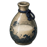
Acid neutralizer
A milky liquid rubbed on the skin: some protection from acid and burns for half a day.
Everything the mod adds that you can hold, wear, drink, throw or build. Seals have their own page.

A milky liquid rubbed on the skin: some protection from acid and burns for half a day.
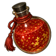
A red liquid with shimmering golden flakes. For a few hours the user moves faster and dodges better.
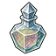
A universal antidote. Clears much of the toxic buildup in the body and resists more for a day.
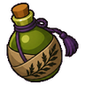
A bitter wormwood potion: harder blows, at the cost of a slightly clouded mind.
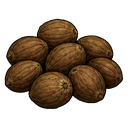
The nut of the coastal belan tree. Eaten, it slows bleeding of all kinds for a couple of hours.
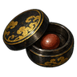
A pill that thickens the blood: it closes bleeding wounds and restores lost blood.
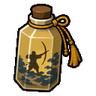
A potion that steadies the hands and sharpens the eye for ranged work.
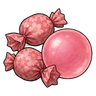
Chewy and sweet. Don't swallow it. A little joy and a sugar rush; Yokushin get chakra back from candy.
A bar of chocolate. A little joy and a sugar rush; Yokushin get chakra back from candy.
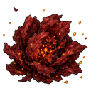
A red bloom that bursts into flame when pollinated. Crushed and rubbed on the skin, it shields against fire.
Brewed with cinderbloom petals. Fire and heat bite much less. Lasts half a day. Made by Brewmeisters.
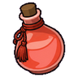
A thick glowing light-red liquid. Keeps the body warm for a day.
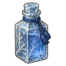
An icy liqueur that keeps the drinker warm from the inside in the worst cold. Lasts half a day. Made by Brewmeisters.
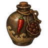
A bitter grog brewed with coffee beans and pepper. The drinker moves fast and tires slowly. Lasts half a day. Made by Brewmeisters.
An odourless light-blue liquid. Guards the skin against heat and fire for a day.
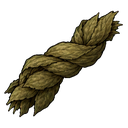
Dried bog leaves burned for a hallucinogenic smoke. A social drug.
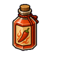
A brew so hot it makes legs run. Much faster on the feet. Lasts half a day. Made by Brewmeisters.
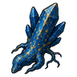
A blue crystalline root flecked with gold. Chewed, it closes wounds almost at once.
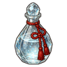
A clear, burning spirit full of the subtle chakra of alcohol. Wounds close much faster for a day. Lasts half a day. Made by Brewmeisters.
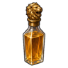
A golden spirit with crushed courage root. The drinker fights bravely and steadily. Lasts half a day. Made by Brewmeisters.
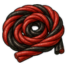
A coil of red and black liquorice. A little joy and a sugar rush; Yokushin get chakra back from candy.
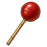
A cherry lollipop. A little joy and a sugar rush; Yokushin get chakra back from candy.
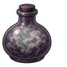
A heavy, cloudy spirit. The drinker's mind sits in a fog that illusions and mind techniques can't easily reach. Lasts half a day. Made by Brewmeisters.
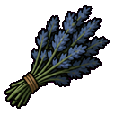
A blue-grey herb smelling faintly of nutmeg that heightens the senses and quickens the step for a few hours.
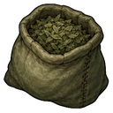
A sailors' pipe weed: smoked, it wards off the cold for a day.
A pale blue potion that refills a ninja's chakra completely.
A dark, spiced ale that turns drink into fury. Harder melee blows, less pain, a little clumsier. Lasts half a day. Made by Brewmeisters.
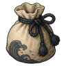
An odourless powder: animals can't smell the user for a day. Better for hunting.
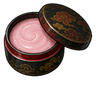
A pale pink balm: soft, glowing skin for a day.
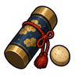
A military ration pill from the hidden villages. Fills the stomach, pushes back fatigue, restores half a ninja's chakra and steadies them for a few hours.
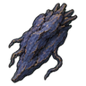
A brittle dull-blue root. Speeds the body's own healing and immune response for a day.
A red, soil-like ointment that nearly stops bleeding for a few hours.
A big rainbow swirl lollipop. A little joy and a sugar rush; Yokushin get chakra back from candy.
A light-green, odourless liniment that hardens the skin for half a day.
Alchemical vapours that ease breathing and keep out poison for half a day.
Bright green medicine that doubles healing speed for a day.
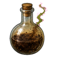
A flask of smoking acid that eats through armour and flesh. Made by Demolitionists.
A fiery-red liquid that steams pink. The most violent bomb an alchemist can make. Made by Demolitionists.
A puff of foul yellow powder that blinds. Made by Demolitionists.
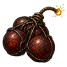
Bloodstones packed with chakra that burst into flame where they land.
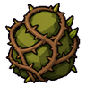
Thrown down, it grows a wide thicket of thorns across the way it was thrown. A harnessed gem made by crystalmancers.
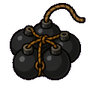
A demolitionist's cluster of small charges that cover a wide area.
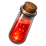
A vial of liquid fire: every drop that lands bursts into flame. Alchana, made at the alchemy table.
A vial of thick earth that hardens into rock where it lands: a short stone wall across the throw. Alchana, made at the alchemy table.
A fiery burst that sends sparks dancing over everyone near. Made by Demolitionists.
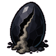
Compressed obsidian that bursts into a choking cloud of ash. A harnessed gem made by crystalmancers.
A ruby charged until it bursts into roaring fire. A harnessed gem made by crystalmancers.
Bursts in a cloud of choking spores. Made by Demolitionists.
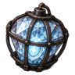
A cut stone charged until it bursts like a bomb. Rare and powerful.
A cloud of vapour that bursts into a wide sheet of fire. Made by Demolitionists.
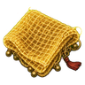
A net of glowing golden threads: it pins everyone it lands on and seals their chakra for a while. Made by Demolitionists.
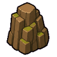
Thrown down, it raises a short wall of stone across the way it was thrown. A harnessed gem made by crystalmancers.
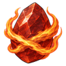
Thrown down, it lights a wide curtain of fire across the way it was thrown. A harnessed gem made by crystalmancers.
A thick black paste that explodes in a roaring blaze. Made by Demolitionists.
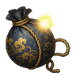
A blinding, deafening blast that stuns everyone nearby without doing real harm.
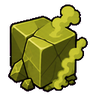
A gem that turns into a burning, acrid gas when it breaks. A harnessed gem made by crystalmancers.
Spores of poisonous fungi fill the air. Made by Demolitionists.
Thrown down, it raises a short wall of ice across the way it was thrown. A harnessed gem made by crystalmancers.
Packed with iron shot: shrapnel flies in every direction. Made by Demolitionists.
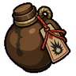
Clay pots of oil sealed with an explosive tag. They burst into a sheet of fire.
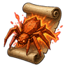
A scroll that throws out a fire spider: it leaps onto enemies and bursts into flame. Alchana, made at the alchemy table.
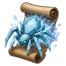
A scroll that throws out a frost spider: it leaps onto enemies and bursts into ice. Alchana, made at the alchemy table.
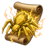
A scroll that throws out a shock spider: it leaps onto enemies and bursts into lightning. Alchana, made at the alchemy table.
A bottle of trapped lightning: everyone nearby is shocked and stunned. Made by Demolitionists.
Silver splinters that sap chakra from everyone in the cloud. Made by Demolitionists.
A bomb of foul filth: everyone nearby reels in disgust. Made by Demolitionists.
A flask of poison gas that debilitates for a long time. Made by Demolitionists.
A burst of freezing wind that chills everyone to the bone. Made by Demolitionists.
Explosive tags: paper seals inked with chakra that explode a moment after landing. Light, cheap and loud.
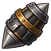
A shaped charge that drives its blast through even the heaviest armour.
A slab of putty explosive. A small blast, but a fierce one. Made by Demolitionists.
A dark-purple stone that tears the air apart and stuns everyone near. Made by Demolitionists.
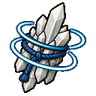
Quartz shards that shatter with a deafening crack, stunning everyone nearby.
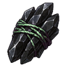
Black shards that seal the chakra of everyone they cut. No techniques for about two hours. A harnessed gem made by crystalmancers.
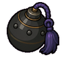
A non-lethal concussion bomb: knocks people senseless instead of tearing them apart. Good for taking prisoners.
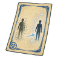
Thrown a short way, it carries the thrower to where it lands. A C-rank travel ritual seal: thrown, it works where it lands. Only a ritualist who knows travel rituals at C rank can write it.
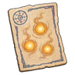
Leaves three floating lights where it lands, for a day. A C-rank deception ritual seal: thrown, it works where it lands. Only a ritualist who knows deception rituals at C rank can write it.
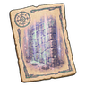
Raises an illusory wall across the way it was thrown: it blocks sight, not movement, for an hour. A C-rank deception ritual seal: thrown, it works where it lands. Only a ritualist who knows deception rituals at C rank can write it.
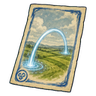
Thrown far, it carries the thrower to where it lands. A C-rank travel ritual seal: thrown, it works where it lands. Only a ritualist who knows travel rituals at C rank can write it.
A wide cloud of black shadow that blocks sight. A C-rank deception ritual seal: thrown, it works where it lands. Only a ritualist who knows deception rituals at C rank can write it.
A clay bomb packed with salt: it burns summoned beings and entities badly. Made by Demolitionists.
A blast of hot sand and light that blinds and stuns. Made by Demolitionists.
A piercing shriek that leaves everyone dazed. Made by Demolitionists.
A splash of alchemical ooze that slows everyone it covers. Made by Demolitionists.
A ninja smoke bomb. Bursts into a thick cloud that blocks sight and spoils enemy aim.
A small pellet that bursts into a cloud of blinding smoke. Made by Demolitionists.
An octahedral stone that releases a sickening stench when broken. A harnessed gem made by crystalmancers.
A gem that shatters into a storm of razor-sharp splinters. A harnessed gem made by crystalmancers.
A charged stone that bursts in a clap of thunder. Made by Demolitionists.
A powder that steals the breath from everyone around. Made by Demolitionists.
Glowing blue acid powder: it burns long and hard. Made by Demolitionists.
A bag of sticky goo that glues everyone it splashes in place. Made by Demolitionists.
A feather token that bursts into tar and feathers, blinding and gluing everyone hit. Alchana, made at the alchemy table.
A weighted net that pins everyone it lands on. Made by Demolitionists.
An agate egg that bursts with a deafening thunderclap. A harnessed gem made by crystalmancers.
A thin, acrid liquid that bursts into a poisonous blast. Made by Demolitionists.
A hollow stone that screams when it breaks, stunning and deafening. A harnessed gem made by crystalmancers.
Skate boots with wind vents: the wearer glides at great speed. A natural fit for Sky Skates.
A red-copper samurai helmet with the crest of House Akagane. Heavy lacquered plates and a wide neck guard.
The porcelain mask of the ANBU bear division, specialists in breaching and defence. Only operatives who know the ANBU arts can make one.
The porcelain mask of the ANBU cat division, specialists in stealth and silent killing. Only operatives who know the ANBU arts can make one.
The porcelain mask of the ANBU falcon division, specialists in tracking and pursuit. Only operatives who know the ANBU arts can make one.
The porcelain mask of the ANBU frog division, specialists in field medicine and healing auras. Only operatives who know the ANBU arts can make one.
The porcelain mask of the ANBU owl division, specialists in intelligence and listening. Only operatives who know the ANBU arts can make one.
The porcelain mask of the ANBU wolf division, specialists in interrogation. Only operatives who know the ANBU arts can make one.
Tinted lenses that keep flashes and stun bursts from blinding the wearer.
A small iron lantern with an ember that never goes out. It keeps sickness and cold away from those who keep the Venator oath. Only one talisman can be worn at a time.
A compact pack for raids.
Three syringes on a strap. When the wearer goes down or bleeds badly, it tends every wound at once. Refills over a day.
A gem cut so its facets catch every movement. The wearer notices more and slips more blows. A harnessed gem made by crystalmancers, worn on the belt. Only one belt item can be worn at a time.
A strap of kunai and vials across the chest.
A heavy cloak with sewn-in plates, worn like a shield.
Soft boots that hold the wearer a hand's breadth above the ground: faster, and harder to hit.
Light boots with chakra-woven soles: the wearer runs much faster.
Boots that lengthen every stride and lighten every load.
A duffle with a space seal stitched in: it holds far more than it should.
A lacquered bracer with a turning seal: techniques do a quarter less damage to the wearer, and one in seven fails entirely.
Small amethysts linked into a long chain. The wearer learns and studies faster. A harnessed gem made by crystalmancers, worn on the belt. Only one belt item can be worn at a time.
An amethyst around a spirit gem. It holds extra chakra for the wearer and refills it faster. A harnessed gem made by crystalmancers, worn on the belt. Only one belt item can be worn at a time.
Four pouches across the chest, with padding.
A cloak with a dizzying pattern: melee attackers can wander off in a daze.
A shimmering cloak that makes the wearer seem a step away from where they are.
A cloak that grounds lightning and crackles at the hem.
A cloak woven with warding seals that turn blows aside.
A pale cloak with an eye seal on the back: sharper sight and truer aim.
Thick padded clothing for the northern passes.
Lenses that show the body's condition: better medicine.
Fine clothing of stature, worn at the courts of the feudal houses.
Matching sake cups: easier bargains and friendships.
A crystal box that sets off enemy traps and mines within 10 cells and stuns machines. Once a day.
A sealed compass whose needle shows the land: clears the fog for 40 cells around. Once a day.
Lacquered lamellar chest armour.
A wide obi with small pouches.
A banded gem cut to bring out its stripes. The wearer moves like a hunting cat. A harnessed gem made by crystalmancers, worn on the belt. Only one belt item can be worn at a time.
Treated clothing that resists flame.
A sake flagon that steadies the nerves.
A lens-bulb flask that helps the mind settle: faster learning.
A charcoal-filter mask: poison gas and smoke barely touch the wearer.
A rose-cut gem with a soft glow. People warm to the wearer. A harnessed gem made by crystalmancers, worn on the belt. Only one belt item can be worn at a time.
A clear sapphire that steadies the eye and the mind. A harnessed gem made by crystalmancers, worn on the belt. Only one belt item can be worn at a time.
A ruby with a spirit gem heart. It lends the wearer vitality and toughness. A harnessed gem made by crystalmancers, worn on the belt. Only one belt item can be worn at a time.
Large leather gloves that let the wearer tear through earth and stone.
A bronze goblet engraved with rice: the bearer gets hungry far more slowly.
A launcher with a three-pronged hook: pull yourself up to 22 cells away. Rewinds in half an hour.
A three-pronged hook on a long chakra-reinforced line. While drafted, the wearer can shoot it and pull themselves up to 12 cells away (line of sight needed), every 10 seconds. Worn in the belt slot.
An armoured apron for the thighs.
A forehead protector with the emblem of Haigakure. Its ninja wear it with pride; others wear it as a trophy or a disguise.
Pleated trousers that hide the footwork.
A small pouch for odds and ends.
A short jacket worn over the kimono, crest on the back.
Loose, light clothing that keeps the wearer cool.
A carved wolf fang with a tiny silver arrowhead charm, worn by Venator hunters. Steadier aim and lighter feet. Only one talisman can be worn at a time.
A red monocle that sees body heat.
A small round buckler for quick parries. Counts as a shield for the Armiger style.
Iron shin greaves for kicking styles: harder kicks, and protected feet.
A wide, flat iron war hat.
A forehead protector with the emblem of Kaedegakure. Its ninja wear it with pride; others wear it as a trophy or a disguise.
A wide conical straw hat against sun and rain.
A padded slate-blue storm-clan vest with a wrap front, a steel guard on the left shoulder and a belt with two pouches. Light armour that helps the wearer hold more chakra.
A wrapped robe of fine cloth.
Armoured sleeves of iron plates and mail.
A black iron samurai helmet with the crest of House Kurogane. Heavy lacquered plates and a wide neck guard.
A thigh rig that keeps weight off the shoulders.
A bottle that traps chakra. Store one technique the wearer knows in it (up to A rank), and release it later to cast it at once for free.
Sealed lenses that catch a lie: better trading and talking.
Fires a barbed line into an enemy and reels them in next to you.
A padded vest covered in pouches.
Rips metal weapons out of enemy hands within 5 cells. Once a day.
A large framed pack for long journeys.
Bandages and herbs: better, faster tending.
A woven straw shoulder bag for couriers.
A drinking gourd that never runs dry: the bearer shrugs off pain and fatigue a little.
A two-handled mug for sharing: friendlier talk.
A tiger mug: braver in a fight.
Blades, pliers and a saw that fold into one tool: faster work of every kind.
A forehead protector with the emblem of Nagisagakure. Its ninja wear it with pride; others wear it as a trophy or a disguise.
A pair of gems set in gold, worn by envoys. Traders and diplomats find the wearer hard to refuse. A harnessed gem made by crystalmancers, worn on the belt. Only one belt item can be worn at a time.
Green-glowing lenses that brighten the dark.
Patched work clothes for the fields: comfortable for hard work.
A forehead protector with the emblem of Otowagakure. Its ninja wear it with pride; others wear it as a trophy or a disguise.
A pack that lets operatives travel lighter and longer.
Spiral lead bullets that bore into flesh. Worn in the belt slot; it works with every hit of the wearer's bow, crossbow or sling. One quiver at a time.
Holed bullets that moan in flight and shake the nerve. Worn in the belt slot; it works with every hit of the wearer's bow, crossbow or sling. One quiver at a time.
Glowing bullets that show where every shot goes. Worn in the belt slot; it works with every hit of the wearer's bow, crossbow or sling. One quiver at a time.
Heavy bullets that crack open with a small quake. Worn in the belt slot; it works with every hit of the wearer's bow, crossbow or sling. One quiver at a time.
Fires a smoke pouch up to 15 cells away. Reloads in an hour.
A sealed flask that keeps food and medicine fresh: cooking with it is cleaner.
A wind-seal disk that launches the wearer up to 10 cells. Recharges in an hour.
Bolts and arrows ready to grab: faster aiming.
Heavy blunt heads that can knock a target senseless. Worn in the belt slot; it works with every hit of the wearer's bow, crossbow or sling. One quiver at a time.
Weighted cords that wrap the legs. Worn in the belt slot; it works with every hit of the wearer's bow, crossbow or sling. One quiver at a time.
Heads that release burrowing, poisonous worms. Worn in the belt slot; it works with every hit of the wearer's bow, crossbow or sling. One quiver at a time.
Wide blades that open bleeding wounds. Worn in the belt slot; it works with every hit of the wearer's bow, crossbow or sling. One quiver at a time.
Narrow points that punch through armour. Worn in the belt slot; it works with every hit of the wearer's bow, crossbow or sling. One quiver at a time.
Shafts that burst into a spray of tiny darts. Worn in the belt slot; it works with every hit of the wearer's bow, crossbow or sling. One quiver at a time.
Forked crescent heads that cut wide, bleeding wounds. Worn in the belt slot; it works with every hit of the wearer's bow, crossbow or sling. One quiver at a time.
Arrows that burst into weighted nets. Worn in the belt slot; it works with every hit of the wearer's bow, crossbow or sling. One quiver at a time.
Shafts that shriek in flight and leave the target dazed. Worn in the belt slot; it works with every hit of the wearer's bow, crossbow or sling. One quiver at a time.
Hollow heads that ring so loud the target reels. Worn in the belt slot; it works with every hit of the wearer's bow, crossbow or sling. One quiver at a time.
Shafts that heat in flight and can set the target alight. Worn in the belt slot; it works with every hit of the wearer's bow, crossbow or sling. One quiver at a time.
Long armour-piercing points. Worn in the belt slot; it works with every hit of the wearer's bow, crossbow or sling. One quiver at a time.
Glowing arrows that show where every shot goes: the archer aims better. Worn in the belt slot; it works with every hit of the wearer's bow, crossbow or sling. One quiver at a time.
Glass vials of poison that shatter on impact. Worn in the belt slot; it works with every hit of the wearer's bow, crossbow or sling. One quiver at a time.
A terrifying whistle that can break the target's nerve. Worn in the belt slot; it works with every hit of the wearer's bow, crossbow or sling. One quiver at a time.
Willow-leaf heads that fly true. Worn in the belt slot; it works with every hit of the wearer's bow, crossbow or sling. One quiver at a time.
Twisted fletching that makes the arrow weave past cover and blocks. Worn in the belt slot; it works with every hit of the wearer's bow, crossbow or sling. One quiver at a time.
A modern radio headset. Orders and warnings arrive at once, so the wearer keeps a cool head and works smoothly with others. Worn in the belt slot.
A brass mouthpiece with its own air.
A sturdy round shield worn on the arm, for the Armiger shield style. Turns aside blows and arrows.
A forehead protector with the emblem of Sajingakure. Its ninja wear it with pride; others wear it as a trophy or a disguise.
Seals and scrolls ready to hand: rituals go faster.
Tinted goggles with leather padding. They keep blinding flashes, smoke and bug swarms out of the eyes: the wearer can't be blinded. Takes the same slot as an ANBU mask.
A white-lacquered samurai helmet with the crest of House Shiranami. Heavy lacquered plates and a wide neck guard.
An emerald carved into a small skull. The wearer carries more and hits a little harder. A harnessed gem made by crystalmancers, worn on the belt. Only one belt item can be worn at a time.
Lacquered lamellar shoulder plates.
A bronze horn that blasts sound: stuns every enemy within 6 cells. Once a day.
Crystal shards fused around a ruby into warm amber. The wearer's blows land harder. A harnessed gem made by crystalmancers, worn on the belt. Only one belt item can be worn at a time.
A brass spyglass. Spotting a target first makes every shot quicker to line up. Worn in the belt slot.
A vest with sixteen pouches.
A paper talisman with a painted open eye, tied to a jade bead. Venator monks make them against illusions and despair. Only one talisman can be worn at a time.
A bronze amulet with a hexagonal ward pattern. The ward turns aside part of every blow. Only one talisman can be worn at a time.
Snap seams that tear free from a grab: easier to slip away.
A tall wooden tower shield bound with iron. Very hard to get past, but heavy. Counts as a shield for the Armiger style.
A forehead protector with the emblem of Tetsugakure. Its ninja wear it with pride; others wear it as a trophy or a disguise.
Thin gloves for quick fingers.
A heavy green stone that knits flesh. The wearer's wounds heal much faster. A harnessed gem made by crystalmancers, worn on the belt. Only one belt item can be worn at a time.
Tools close at hand.
A small pack on the hip.
Woven straw sandals: light and quick.
A bottle with little wings that lightens every step.
Lenses that see through skin and stone.
A monocle with a little telescope: far better aim, a little worse up close.
Gamyûsa Mori: the double-ended jousting lance of the Kishiyagi goat knights. Long reach and a brutal piercing thrust that punches through armour. Only a Kishiyagi can craft it, and Kishiyagi wielders fight better with it.
A long bamboo flute with seven holes. Its songs carry far. A Bard needs an instrument in hand for the songs of the Art of the Bard. It makes a poor weapon.
An umbrella built for fighting: a steel frame, a stabbing tip and a canopy that turns blades. Good for parrying.
Kyokugoma: a heavy steel yo-yo on a long string. Hits from a surprising distance.
A staff hung with temple bells. It rings with every step and every blow. A Bard needs an instrument in hand for the songs of the Art of the Bard. It makes a poor weapon.
A pear-shaped lute played with a big plectrum. A Bard needs an instrument in hand for the songs of the Art of the Bard. It makes a poor weapon.
A legendary finesse sword for a fighter who strikes fast and often. Every hit draws a little life back to the wielder.
A long fighting staff with iron caps, for Bōjutsu. Fast, and good for keeping foes at a distance.
A legendary cleaver of gears and plates that can stretch its blade far beyond its size. Heavy and devastating.
Ryūjin Jakka: the Airontoku's searing katana. Its edge runs with fire, so every cut also burns. Only a Airontoku can craft it, and Airontoku wielders fight better with it.
Hae Hane Subeta: a double-ended "swallow" sword of the Hitobitomae, the human fly clan. Light and fast, and both blades cut, so its wielder strikes twice as often as with a normal sword. Only a Hitobitomae can craft it, and Hitobitomae wielders fight better with it.
A long bamboo blowgun for poisoned darts.
A legendary sword of wind and lightning. Its strikes can leave a foe shaking.
A sword spun from the Ōgumo's hardened golden web. It sticks to whatever it cuts, slowing the wounded. Only a Ōgumo can craft it, and Ōgumo wielders fight better with it.
An oversized fighting umbrella, almost a shield on a pole.
A braided cord sling for stones.
A short bow, quick to draw on the move.
A heavy crank crossbow whose bolts punch through armour.
A small double-reed pipe with a piercing voice. A Bard needs an instrument in hand for the songs of the Art of the Bard. It makes a poor weapon.
A legendary sword of impossible length. It cuts through armour as if it were not there.
A Masamune smith-soul war hammer of packed iron sand. Slow, heavy, and it flattens whatever it hits. Only a Masamune can craft it, and Masamune wielders fight better with it.
A blade grown from a Kaguya's own strengthened bone, harder than steel and as light as wood. Only a Kaguya can craft it, and Kaguya wielders fight better with it.
A long-hafted war scythe for the Kamashi death-scythe style.
A huge iron-studded war club. Each blow can leave the target stunned.
A blade of the Kazeraikou storm clan, its edge coated in wind and lightning: every cut also shocks. (Kazeraikou created by Marii from NFRP.) Only a Kazeraikou can craft it, and Kazeraikou wielders fight better with it.
A legendary fang-shaped sword. Its wind cuts deep and draws chakra out of the foe.
A small bowed fiddle. A Bard needs an instrument in hand for the songs of the Art of the Bard. It makes a poor weapon.
A long thirteen-string zither. A Bard needs an instrument in hand for the songs of the Art of the Bard. It makes a poor weapon.
A sickle on a chain. The weight can tangle a foe for a moment.
A small curved harp with silver strings. Gentle songs for healing and sleep. A Bard needs an instrument in hand for the songs of the Art of the Bard. It makes a poor weapon.
A small, quick axe.
A round wooden fish drum. A Bard needs an instrument in hand for the songs of the Art of the Bard. It makes a poor weapon.
A curved blade on a long shaft. Sweeping cuts that keep enemies at bay.
A very long two-handed field sword. Slow but devastating.
A long-handled war axe that splits armour.
A small one-handed crossbow.
A long, slim thrusting sword for the Saint-Didier fencing style.
A crossbow with a box magazine: three bolts in quick succession.
The double-bladed katana of the Hyoushi. Each beat sends a ringing resonance through the target that rattles them senseless. Only a Hyoushi can craft it, and Hyoushi wielders fight better with it.
A legendary sword-halberd of enormous size. Every blow burns and can hurl the target back. Only a master smith can forge it.
Thin metal needles thrown in quick bursts at the body's weak points.
An end-blown bamboo flute. A Bard needs an instrument in hand for the songs of the Art of the Bard. It makes a poor weapon.
A three-stringed lute with a square body. Sharp, fast notes. A Bard needs an instrument in hand for the songs of the Art of the Bard. It makes a poor weapon.
A mouth organ of seventeen bamboo pipes. A Bard needs an instrument in hand for the songs of the Art of the Bard. It makes a poor weapon.
A wrist bracer with a spring-loaded hidden blade.
A sling on a staff: longer reach and heavier stones.
Fine steel wire for the Demon Weaver style. It cuts, and it can wrap a foe in a web.
Hand claws of four curved blades. Very fast, and good for parrying.
Iron knuckles for heavy punches.
Polished iron balls thrown two at a time.
A circular blade with a sharpened rim, thrown spinning.
A pair of tonfa: side-handled batons that guard the forearms and strike hard.
A short companion sword: quick cuts and thrusts.
A heavy curved throwing club.
A small war drum worn at the hip. Every beat steadies the warriors who hear it. A Bard needs an instrument in hand for the songs of the Art of the Bard. It makes a poor weapon.
Tessen: an iron-ribbed folding war fan. It blocks, it cuts, and in the right hands it throws wind.
A curved horn of bone and brass. A single blast can freeze an enemy line. A Bard needs an instrument in hand for the songs of the Art of the Bard. It makes a poor weapon.
A tall asymmetric longbow with long reach.
A great two-handed scythe for the death-scythe style.
An oversized iron battle fan. Its gusts can blow foes back.
A heavy war mallet that can knock foes off their feet.
A three-spouted funnel for mixing. Place it next to an alchemy table (within 6 cells): +10% work speed there.
A workbench of retorts, mortars, kegs and gem vices. Anyone can make the common pills and potions here; Brewmeisters, Crystalmancers and Demolitionists make the items of their discipline.
A thicket of thorny briars grown by a briar stone. It crumbles away after about an hour.
A scatter of iron caltrops hidden in the dirt. They wound whoever steps on them and are spent after one victim. Cheap and quick to lay.
A big iron cauldron for brews. Place it next to an alchemy table (within 6 cells): +15% work speed there.
A floating ritual light. It fades after a day.
A computer for research notes and records. Placed next to a hi-tech research bench, it speeds up research a little.
A wall of rough stone raised by an escarpment gem. It crumbles away after about an hour.
A rugged, hand-cranked field radio. Like a comms console, it lets you contact other factions and traders, but it needs no power.
A copper still for refining formulas. Place it next to an alchemy table (within 6 cells): +15% work speed there.
A crystal carved from living ice. It cools a room down to about 12°C with no power. A harnessed gem made by crystalmancers; it can be moved like furniture.
A wall of clear blue ice raised by a glacier gem. It crumbles away after about an hour.
A warding glyph drawn on the floor. When an enemy comes close it flares, stunning them and raising the alarm. Written at the scribe desk by a ritualist who knows warding rituals at B rank, and placed like furniture.
A green stone that enriches the ground around it: plants nearby grow half again as fast. A harnessed gem made by crystalmancers; it can be moved like furniture.
An illusory wall. It blocks sight, but anyone can walk through it. It fades after about an hour.
Senses the body heat of enemies within 8 cells and sounds a warning.
A red stone that is always warm. It heats a room up to about 21°C with no fuel. A harnessed gem made by crystalmancers; it can be moved like furniture.
A beam of light across the path: it warns when an enemy comes within 4 cells and stuns them for a moment.
A modern motion scanner on a tripod. It reveals enemies within 35 cells through the fog of war and warns you when it picks them up. Needs no power.
A pinwheel post with a bell: warns when an enemy moves within 7 cells.
Listens for footsteps and warns when an enemy is within 10 cells.
A carved stone that slowly fills a bowl with dried travel food: six pemmican every two days or so. A harnessed gem made by crystalmancers; it can be moved like furniture.
A hidden floor plate: warns when an enemy steps within 2 cells and staggers them for a moment.
A low desk with brushes, ink stones and rolls of chakra paper. Ninja write technique scrolls here, and sealers inscribe enchantment seals and Revamp Scrolls.
A stone casket sealed with old chakra seals, the kind clans used for their honoured dead and their treasures. Break the seal to open it: tombs like this are rarely left unguarded.
A clay urn of offerings, closed with a paper seal. Break the seal to see what the faithful left here.
A little iron mine on legs. When an enemy comes within 8 cells it scuttles toward them and goes off.
A weathered stone altar. Praying here gives a blessing for three days: easier chakra and a calm mind. An old shrine has only a few blessings left in it.
A gem that drinks in sunlight and gives it back as a warm, steady light. No fuel needed. A harnessed gem made by crystalmancers; it can be moved like furniture.
A marker stone carved with a swift mark formula. A swift mark recall seal carries its user here in a flash. Written at the scribe desk by a ritualist who knows travel rituals at S rank, and placed like furniture.
A chalk circle charged with travel seals. Right-click it with someone to step through to any other teleportation circle on the map. Written at the scribe desk by a ritualist who knows travel rituals at B rank, and placed like furniture.
A battered wooden post from an old training ground. An hour of practice teaches melee, and old students sometimes carved taijutsu notes into the wood. Once a day per person.
A thin wire strung with small bells. It rings and warns you when an enemy comes within a few steps. It does not hurt anyone.
A cord with bells across the path: warns when an enemy comes within 2 cells.
A bowl of water that ripples with footsteps: warns when an enemy is within 9 cells.
Studying it (about an hour) teaches plants. Each reader can learn from it once.
An almost unbreakable dark metal. Weapons of it cut through armour. Forged at a smithy, ten at a time.
Silver bound into steel by alchemy. Bane of monsters. Forged at a smithy, ten at a time.
Chakra fed into this amber spreads into a crackling shield that dulls blunt blows and lightning. The crystal crumbles after use. Made by Crystalmancers.
Rough amethysts, purple and glittering. Valuable to traders and jewellers.
A padded silver blanket against blood loss, cold and heat. Use it on anyone nearby.
Oil that bites deep into animals. Rub it on the weapon in hand (a blade, a piercing weapon or a ranged weapon): it lasts 25 hits and takes no seal slot. A new coating replaces the old one.
Strapped into a full-body binding harness. Can't join a prison break. Use it on a prisoner, a slave or a downed enemy. It can be taken off again with the matching operation.
A sealed vial of living bloodline tissue, taken by a Medical Specialist. Grafted into a host, it gives them the clan's gene and techniques, up to B rank. It spoils within days unless kept cold.
A sapphire eye with a spirit gem pupil. It sees well and senses chakra, so its owner's techniques find their mark. A harnessed gem made by crystalmancers; a surgeon installs it like an artificial eye.
A weighted rod that steadies the bow. Fit it to the bow, crossbow or sling in hand: it stays on that weapon and takes no seal slot. A weapon holds two fittings; a third replaces the oldest.
A feather token that unfolds into a campfire and two bedrolls. Alchana, made at the alchemy table. Used up after one use.
A scroll with an animal sealed inside. Using it releases the animal, tamed and bonded to the user.
A blue-grey metal that conducts chakra. Weapons forged from it drain a little chakra with every hit; armour made of it is light and tough.
A collar of sealing script: no techniques, and no prison breaks. Use it on a prisoner, a slave or a downed enemy. It can be taken off again with the matching operation.
Rough, hand-hammered iron, deadly to monsters, summoned beings and things from beyond. Forged at a smithy, ten at a time.
Fit it to one of your doors: the door gets x1.8 hit points, so raiders take much longer to break it. A stronger lock replaces a weaker one.
A tiny bug planted by chakra thread. Using it picks up every enemy on the map and lifts the fog around them. Used up.
Studying it (about an hour) teaches animals, melee. Each reader can learn from it once.
A small telescope sight. Fit it to the bow, crossbow or sling in hand: it stays on that weapon and takes no seal slot. A weapon holds two fittings; a third replaces the oldest.
Chakra turns this shard into a skin of crystal armour that turns blades for a few hours. The crystal crumbles after use. Made by Crystalmancers.
White crystal shed by a crystal serpent. Valued by crystalmancers and jewellers.
A black oil carrying a weakening curse. Rub it on the weapon in hand (a blade, a piercing weapon or a ranged weapon): it lasts 20 hits and takes no seal slot. A new coating replaces the old one.
A faceted purple amethyst. Worth far more than a rough stone, and the base of every harnessed gem a crystalmancer makes.
A faceted green emerald. Worth far more than a rough stone, and the base of every harnessed gem a crystalmancer makes.
A faceted deep red ruby. Worth far more than a rough stone, and the base of every harnessed gem a crystalmancer makes.
A faceted deep blue sapphire. Worth far more than a rough stone, and the base of every harnessed gem a crystalmancer makes.
A near-black steel. Its wounds bleed badly. Forged at a smithy, ten at a time.
An orange, foul-smelling poison that builds up with every hit. Rub it on the weapon in hand (a blade, a piercing weapon or a ranged weapon): it lasts 15 hits and takes no seal slot. A new coating replaces the old one.
A black amethyst with spirit gems sunk into it. It drives out the worst illness, wound or condition the user has. Precious beyond words. A harnessed gem made by crystalmancers. Used up after one use.
A dark-green poison that cripples. Rub it on the weapon in hand (a blade, a piercing weapon or a ranged weapon): it lasts 15 hits and takes no seal slot. A new coating replaces the old one.
A desert herb used to make a poison.
A fiery oil that can set the target alight. Rub it on the weapon in hand (a blade, a piercing weapon or a ranged weapon): it lasts 20 hits and takes no seal slot. A new coating replaces the old one.
Red-gold steel forged in dragonfire. Burns what it cuts, and turns fire aside. Forged at a smithy, ten at a time.
Oil that disrupts constructs and machines. Rub it on the weapon in hand (a blade, a piercing weapon or a ranged weapon): it lasts 25 hits and takes no seal slot. A new coating replaces the old one.
Rough emeralds, green and glittering. Valuable to traders and jewellers.
Studying it (about an hour) teaches animals. Each reader can learn from it once.
Studying it (about an hour) teaches plants. Each reader can learn from it once.
Studying it (about an hour) teaches intellectual. Each reader can learn from it once.
A teardrop of crystal that weeps a healing dew. It closes about 15 points of wounds. A harnessed gem made by crystalmancers. Used up after one use.
A hot iron rod that seals bleeding wounds. It hurts. Use it on anyone nearby.
Bandages, salves and splints for the field. The user tends all their own wounds at once, quite well. Used up.
Bamboo slats and bandages: tends up to three wounds and dulls the pain for two days. Use it on anyone nearby.
Steel quenched in cinderbloom oil. Weapons of it burn; armour of it shrugs off fire. Forged at a smithy, ten at a time.
A poison that burns from inside the wound. Rub it on the weapon in hand (a blade, a piercing weapon or a ranged weapon): it lasts 20 hits and takes no seal slot. A new coating replaces the old one.
A stock that steadies long shots. Fit it to the bow, crossbow or sling in hand: it stays on that weapon and takes no seal slot. A weapon holds two fittings; a third replaces the oldest.
Studying it (about an hour) teaches intellectual, crafting. Each reader can learn from it once.
Steel tempered in frostcap. Weapons of it bite with cold; armour of it keeps the wearer warm. Forged at a smithy, ten at a time.
A wiry, pale blue herb. Processed into an oil, it chills a weapon so it deals frost damage.
Frostcap made into a chilling oil. Rub it on the weapon in hand: each hit adds frost and can chill the target. Lasts 20 hits and takes no seal slot.
Clear, glass-like steel. Extremely sharp, but brittle. Forged at a smithy, ten at a time.
Thick glue and a brush: patches the user's worn gear and weapon by a quarter of their hit points.
Wood of a wonderful gold shade, from trees that grow near gold.
A grimoire of Deception rituals. Studying it teaches a ninja the Deception ritual school one rank further, up to B rank. Each reader can learn from it once.
A grimoire of Travel rituals. Studying it teaches a ninja the Travel ritual school one rank further, up to B rank. Each reader can learn from it once.
A grimoire of Restoration rituals. Studying it teaches a ninja the Restoration ritual school one rank further, up to B rank. Each reader can learn from it once.
A grimoire of Augmentation rituals. Studying it teaches a ninja the Augmentation ritual school one rank further, up to B rank. Each reader can learn from it once.
A grimoire of Warding rituals. Studying it teaches a ninja the Warding ritual school one rank further, up to B rank. Each reader can learn from it once.
A nearly clear poison that sends the target wandering in visions. Rub it on the weapon in hand (a blade, a piercing weapon or a ranged weapon): it lasts 15 hits and takes no seal slot. A new coating replaces the old one.
A venom oil made to kill people. Rub it on the weapon in hand (a blade, a piercing weapon or a ranged weapon): it lasts 20 hits and takes no seal slot. A new coating replaces the old one.
An emerald carved into a small human figure. Pressed to the chest, it closes about 35 points of wounds. A harnessed gem made by crystalmancers. Used up after one use.
An attuned crystal. Focusing through it speeds the user's healing for half a day. The crystal crumbles after use. Made by Crystalmancers.
Oil that bites deep into monsters. Rub it on the weapon in hand (a blade, a piercing weapon or a ranged weapon): it lasts 25 hits and takes no seal slot. A new coating replaces the old one.
A ruby tooth taken from a hydra's skull and carved with seals. It raises a bone golem that serves for a day. A harnessed gem made by crystalmancers. Used up after one use.
Oil that eats through chitin. Rub it on the weapon in hand (a blade, a piercing weapon or a ranged weapon): it lasts 25 hits and takes no seal slot. A new coating replaces the old one.
Wearing heavy iron manacles. Can't join a prison break. Use it on a prisoner, a slave or a downed enemy. It can be taken off again with the matching operation.
A map of the known world, covered in notes. Reading it reveals a sealed ruin with the strongest guardians and the richest loot.
A demolitionist's buried charge. Use it to bury a land mine where the user stands; it goes off when an enemy steps on it. Made by Demolitionists.
Black seeds of the larkspur flower, a poison. Alchemists make debilitating poison from them.
A local map with a ruin marked on it. Reading it reveals a sealed ruin to explore.
Fit it to one of your doors: the door gets x2.2 hit points, so raiders take much longer to break it. A stronger lock replaces a weaker one.
Picks and a tension wrench for old seals. Use it on a sealed casket in a ruin: its wards weaken (fewer guardians wake) and any poison trap is disarmed.
A volume of the Loremaster Encyclopedia on animal training. Studying it (about an hour) teaches animals; each reader can learn from it once.
A volume of the Loremaster Encyclopedia on appraisals. Studying it (about an hour) teaches social; each reader can learn from it once.
A volume of the Loremaster Encyclopedia on covert activities. Studying it (about an hour) teaches melee, shooting; each reader can learn from it once.
A volume of the Loremaster Encyclopedia on metals. Studying it (about an hour) teaches crafting, mining; each reader can learn from it once.
A volume of the Loremaster Encyclopedia on artistic expressions. Studying it (about an hour) teaches artistic; each reader can learn from it once.
A volume of the Loremaster Encyclopedia on fabrics. Studying it (about an hour) teaches crafting; each reader can learn from it once.
A volume of the Loremaster Encyclopedia on woodworks. Studying it (about an hour) teaches construction; each reader can learn from it once.
A volume of the Loremaster Encyclopedia on gymnastics. Studying it (about an hour) teaches melee; each reader can learn from it once.
A volume of the Loremaster Encyclopedia on mechanical devices. Studying it (about an hour) teaches crafting, intellectual; each reader can learn from it once.
A volume of the Loremaster Encyclopedia on mental acumen. Studying it (about an hour) teaches intellectual; each reader can learn from it once.
A volume of the Loremaster Encyclopedia on nature studies. Studying it (about an hour) teaches plants; each reader can learn from it once.
A volume of the Loremaster Encyclopedia on survival. Studying it (about an hour) teaches plants, shooting, cooking; each reader can learn from it once.
Locked in magnetic cuffs. Can't join a prison break. Use it on a prisoner, a slave or a downed enemy. It can be taken off again with the matching operation.
A fine polish that keeps the edge keen: a little more damage on every hit. Rub it on the weapon in hand (a blade, a piercing weapon or a ranged weapon): it lasts 40 hits and takes no seal slot. A new coating replaces the old one.
Studying it (about an hour) teaches medicine. Each reader can learn from it once.
A shining, very light metal. Weapons of it are quick; armour of it hardly weighs a thing. Forged at a smithy, ten at a time.
Oil for the restless dead and the things that crawl from beyond. Rub it on the weapon in hand (a blade, a piercing weapon or a ranged weapon): it lasts 25 hits and takes no seal slot. A new coating replaces the old one.
Oil for felling big foes. Rub it on the weapon in hand (a blade, a piercing weapon or a ranged weapon): it lasts 25 hits and takes no seal slot. A new coating replaces the old one.
A fine-ground sight. Fit it to the bow, crossbow or sling in hand: it stays on that weapon and takes no seal slot. A weapon holds two fittings; a third replaces the oldest.
Fit it to one of your doors: the door gets x1.3 hit points, so raiders take much longer to break it. A stronger lock replaces a weaker one.
A carved grip for quicker handling. Fit it to the bow, crossbow or sling in hand: it stays on that weapon and takes no seal slot. A weapon holds two fittings; a third replaces the oldest.
A fine grey powder: every plant within 6 cells of the user grows a quarter of the way.
A sealed bandage that stops bleeding well. Use it on anyone nearby.
A wooden puzzle box with hidden moves. Working at it is relaxing and sharpens the mind.
A red, pungent liquid that rusts metal: deadly against machines. Rub it on the weapon in hand (a blade, a piercing weapon or a ranged weapon): it lasts 15 hits and takes no seal slot. A new coating replaces the old one.
A non-magnifying sight with a red aiming dot. Fit it to the bow, crossbow or sling in hand: it stays on that weapon and takes no seal slot. A weapon holds two fittings; a third replaces the oldest.
A regional map with a tomb marked on it. Reading it reveals a sealed ruin with stronger guardians and better loot.
An ancient oil against summoned and conjured beings. Rub it on the weapon in hand (a blade, a piercing weapon or a ranged weapon): it lasts 25 hits and takes no seal slot. A new coating replaces the old one.
A long scroll of chakra-inked exercises for unlearning a way of fighting. A ninja who has already used their free respec needs one to change their build again, and loses part of their training in every kind of jutsu they drop or step down (NFRP's revamp cut).
Permanently gives the target adaptive body. One person can carry three augmentations. A S-rank augmentation ritual written on a seal tag: anyone can use it, but only a ritualist who knows augmentation rituals at S rank can write it.
Permanently gives the target armour plates. One person can carry three augmentations. A B-rank augmentation ritual written on a seal tag: anyone can use it, but only a ritualist who knows augmentation rituals at B rank can write it.
Draws every augmentation and curse out of the target. A A-rank augmentation ritual written on a seal tag: anyone can use it, but only a ritualist who knows augmentation rituals at A rank can write it.
Ends the target's mental break at once and keeps them calm for a day. A C-rank deception ritual written on a seal tag: anyone can use it, but only a ritualist who knows deception rituals at C rank can write it.
The user blends into the surroundings for about two hours: invisible to enemies, but slower. A B-rank deception ritual written on a seal tag: anyone can use it, but only a ritualist who knows deception rituals at B rank can write it.
The user runs at a terrific pace for about an hour. A B-rank travel ritual written on a seal tag: anyone can use it, but only a ritualist who knows travel rituals at B rank can write it.
Permanently gives the target claws. One person can carry three augmentations. A C-rank augmentation ritual written on a seal tag: anyone can use it, but only a ritualist who knows augmentation rituals at C rank can write it.
Washes toxic buildup, food poisoning and poisons out of the target. A C-rank restoration ritual written on a seal tag: anyone can use it, but only a ritualist who knows restoration rituals at C rank can write it.
Pulls one of your animals on this map to the user's side. A C-rank travel ritual written on a seal tag: anyone can use it, but only a ritualist who knows travel rituals at C rank can write it.
Heals about 12 points of wounds on everyone friendly within 5 cells of the user. A C-rank restoration ritual written on a seal tag: anyone can use it, but only a ritualist who knows restoration rituals at C rank can write it.
Places a waiting seal on the target: the next time they go down, it heals 40 points of wounds at once. A A-rank restoration ritual written on a seal tag: anyone can use it, but only a ritualist who knows restoration rituals at A rank can write it.
Destroys blight on every plant within 9 cells of the user. A S-rank restoration ritual written on a seal tag: anyone can use it, but only a ritualist who knows restoration rituals at S rank can write it.
Cures the target's worst disease. A C-rank restoration ritual written on a seal tag: anyone can use it, but only a ritualist who knows restoration rituals at C rank can write it.
Curses the target with brittle bones for five days. Meant for enemies and prisoners. A C-rank augmentation ritual written on a seal tag: anyone can use it, but only a ritualist who knows augmentation rituals at C rank can write it.
Curses the target with combat fear for five days. Meant for enemies and prisoners. A C-rank augmentation ritual written on a seal tag: anyone can use it, but only a ritualist who knows augmentation rituals at C rank can write it.
Curses the target with festering sores for five days. Meant for enemies and prisoners. A C-rank augmentation ritual written on a seal tag: anyone can use it, but only a ritualist who knows augmentation rituals at C rank can write it.
Curses the target with lethargy for five days. Meant for enemies and prisoners. A C-rank augmentation ritual written on a seal tag: anyone can use it, but only a ritualist who knows augmentation rituals at C rank can write it.
Curses the target with nightmares for three days. A A-rank deception ritual written on a seal tag: anyone can use it, but only a ritualist who knows deception rituals at A rank can write it.
Curses the target with thin skin for five days. Meant for enemies and prisoners. A C-rank augmentation ritual written on a seal tag: anyone can use it, but only a ritualist who knows augmentation rituals at C rank can write it.
Permanently gives the target enhanced metabolism. One person can carry three augmentations. A B-rank augmentation ritual written on a seal tag: anyone can use it, but only a ritualist who knows augmentation rituals at B rank can write it.
Permanently gives the target exoskeleton. One person can carry three augmentations. A A-rank augmentation ritual written on a seal tag: anyone can use it, but only a ritualist who knows augmentation rituals at A rank can write it.
Permanently gives the target expanded lungs. One person can carry three augmentations. A C-rank augmentation ritual written on a seal tag: anyone can use it, but only a ritualist who knows augmentation rituals at C rank can write it.
Turns back the target's body by five years (never below 18). A S-rank deception ritual written on a seal tag: anyone can use it, but only a ritualist who knows deception rituals at S rank can write it.
Permanently gives the target extra arms. One person can carry three augmentations. A S-rank augmentation ritual written on a seal tag: anyone can use it, but only a ritualist who knows augmentation rituals at S rank can write it.
The target can take much more pain before going down, for half a day. A C-rank restoration ritual written on a seal tag: anyone can use it, but only a ritualist who knows restoration rituals at C rank can write it.
Permanently gives the target fangs. One person can carry three augmentations. A C-rank augmentation ritual written on a seal tag: anyone can use it, but only a ritualist who knows augmentation rituals at C rank can write it.
The target's wounds heal four times as fast for two days. A A-rank restoration ritual written on a seal tag: anyone can use it, but only a ritualist who knows restoration rituals at A rank can write it.
The target moves much faster for a day. A B-rank travel ritual written on a seal tag: anyone can use it, but only a ritualist who knows travel rituals at B rank can write it.
Everyone friendly within 8 cells fights better for a day. A B-rank restoration ritual written on a seal tag: anyone can use it, but only a ritualist who knows restoration rituals at B rank can write it.
Permanently gives the target filtered lungs. One person can carry three augmentations. A B-rank augmentation ritual written on a seal tag: anyone can use it, but only a ritualist who knows augmentation rituals at B rank can write it.
Preserves a corpse: it is as fresh as the hour it died. A C-rank restoration ritual written on a seal tag: anyone can use it, but only a ritualist who knows restoration rituals at C rank can write it.
The user charms everyone they talk to for a day. A C-rank deception ritual written on a seal tag: anyone can use it, but only a ritualist who knows deception rituals at C rank can write it.
Breaks down a prisoner's resistance. A C-rank deception ritual written on a seal tag: anyone can use it, but only a ritualist who knows deception rituals at C rank can write it.
Heals about 80 points of the target's wounds. A A-rank restoration ritual written on a seal tag: anyone can use it, but only a ritualist who knows restoration rituals at A rank can write it.
Permanently gives the target healing touch. One person can carry three augmentations. A S-rank augmentation ritual written on a seal tag: anyone can use it, but only a ritualist who knows augmentation rituals at S rank can write it.
Wraps the target in an illusion of luxury: a good mood for a day. A C-rank deception ritual written on a seal tag: anyone can use it, but only a ritualist who knows deception rituals at C rank can write it.
Permanently gives the target living furnace. One person can carry three augmentations. A B-rank augmentation ritual written on a seal tag: anyone can use it, but only a ritualist who knows augmentation rituals at B rank can write it.
Permanently gives the target massive claw. One person can carry three augmentations. A A-rank augmentation ritual written on a seal tag: anyone can use it, but only a ritualist who knows augmentation rituals at A rank can write it.
Erases the target's worst bad memory. A B-rank deception ritual written on a seal tag: anyone can use it, but only a ritualist who knows deception rituals at B rank can write it.
Fills the target with rest, as if they had slept the whole night. A B-rank restoration ritual written on a seal tag: anyone can use it, but only a ritualist who knows restoration rituals at B rank can write it.
Permanently gives the target pervasive hearing. One person can carry three augmentations. A B-rank augmentation ritual written on a seal tag: anyone can use it, but only a ritualist who knows augmentation rituals at B rank can write it.
The user takes half damage for about half an hour. A B-rank deception ritual written on a seal tag: anyone can use it, but only a ritualist who knows deception rituals at B rank can write it.
Permanently gives the target photosynthetic. One person can carry three augmentations. A A-rank augmentation ritual written on a seal tag: anyone can use it, but only a ritualist who knows augmentation rituals at A rank can write it.
The user bargains and negotiates better for a day. A C-rank deception ritual written on a seal tag: anyone can use it, but only a ritualist who knows deception rituals at C rank can write it.
Permanently gives the target prehensile tail. One person can carry three augmentations. A A-rank augmentation ritual written on a seal tag: anyone can use it, but only a ritualist who knows augmentation rituals at A rank can write it.
Brings a fresh corpse back to life. The dead don't always come back whole. A S-rank restoration ritual written on a seal tag: anyone can use it, but only a ritualist who knows restoration rituals at S rank can write it.
Lifts every timed affliction from the target: daze, blindness, seals, poisons and the like. A C-rank restoration ritual written on a seal tag: anyone can use it, but only a ritualist who knows restoration rituals at C rank can write it.
Heals wounds to the target's eyes and ears and lifts blindness and deafness. A C-rank restoration ritual written on a seal tag: anyone can use it, but only a ritualist who knows restoration rituals at C rank can write it.
Turns back the target's body by ten years (never below 18). A S-rank restoration ritual written on a seal tag: anyone can use it, but only a ritualist who knows restoration rituals at S rank can write it.
Permanently gives the target scaly skin. One person can carry three augmentations. A C-rank augmentation ritual written on a seal tag: anyone can use it, but only a ritualist who knows augmentation rituals at C rank can write it.
Permanently gives the target skeletal reinforcement. One person can carry three augmentations. A A-rank augmentation ritual written on a seal tag: anyone can use it, but only a ritualist who knows augmentation rituals at A rank can write it.
Permanently gives the target sleepless. One person can carry three augmentations. A C-rank augmentation ritual written on a seal tag: anyone can use it, but only a ritualist who knows augmentation rituals at C rank can write it.
Guards the target's soul for three days: steadier mind, little psychic harm. A A-rank restoration ritual written on a seal tag: anyone can use it, but only a ritualist who knows restoration rituals at A rank can write it.
Pulls one of your people on this map to the user's side. A B-rank travel ritual written on a seal tag: anyone can use it, but only a ritualist who knows travel rituals at B rank can write it.
Carries the user in a flash to the nearest swift mark on the map. A S-rank travel ritual written on a seal tag: anyone can use it, but only a ritualist who knows travel rituals at S rank can write it.
Permanently gives the target thick fur coat. One person can carry three augmentations. A C-rank augmentation ritual written on a seal tag: anyone can use it, but only a ritualist who knows augmentation rituals at C rank can write it.
Permanently gives the target thick hide. One person can carry three augmentations. A B-rank augmentation ritual written on a seal tag: anyone can use it, but only a ritualist who knows augmentation rituals at B rank can write it.
Permanently gives the target thin fur coat. One person can carry three augmentations. A C-rank augmentation ritual written on a seal tag: anyone can use it, but only a ritualist who knows augmentation rituals at C rank can write it.
The user gives the target 25 points of healing, and is left tired. A C-rank restoration ritual written on a seal tag: anyone can use it, but only a ritualist who knows restoration rituals at C rank can write it.
The user vanishes from sight for about half an hour. A B-rank deception ritual written on a seal tag: anyone can use it, but only a ritualist who knows deception rituals at B rank can write it.
Permanently gives the target very thick hide. One person can carry three augmentations. A S-rank augmentation ritual written on a seal tag: anyone can use it, but only a ritualist who knows augmentation rituals at S rank can write it.
The target carries far more for two days. A C-rank travel ritual written on a seal tag: anyone can use it, but only a ritualist who knows travel rituals at C rank can write it.
Tied up with thick rope. Can't join a prison break. The knots loosen after three days. Use it on a prisoner, a slave or a downed enemy. It can be taken off again with the matching operation.
A ruby attuned against fire. Fire and heat do far less harm for half a day. The crystal crumbles after use. Made by Crystalmancers.
Rough rubys, red and glittering. Valuable to traders and jewellers.
A sapphire attuned against cold. The user stays warm and steady in deep cold. The crystal crumbles after use. Made by Crystalmancers.
Rough sapphires, blue and glittering. Valuable to traders and jewellers.
A locked iron collar with a bell. Can't join a prison break. Use it on a prisoner, a slave or a downed enemy. It can be taken off again with the matching operation.
Wires, bells and tools for trap work. Use it on an enemy or ruin trap to take it apart safely.
A poison whose scent breaks the will to fight. Rub it on the weapon in hand (a blade, a piercing weapon or a ranged weapon): it lasts 15 hits and takes no seal slot. A new coating replaces the old one.
Glowing oil that harms spirits and entities. Rub it on the weapon in hand (a blade, a piercing weapon or a ranged weapon): it lasts 25 hits and takes no seal slot. A new coating replaces the old one.
A gem that holds chakra like water holds heat. High-rank seals need them.
Metal from a fallen star. Its blows flash like starlight and can dazzle. Forged at a smithy, ten at a time.
A dark-blue metal full of sparks. Weapons of it can stun. Forged at a smithy, ten at a time.
A short golden rod: struck, it leaves a floating light for a day. Alchana, made at the alchemy table. Used up after one use.
Amber with wasps sealed inside. Breaking it frees four berserker wasps that serve for half a day. A harnessed gem made by crystalmancers. Used up after one use.
A scroll with an expert's notes for one A-rank technique. Studying it teaches the reader one A-rank ninjutsu, genjutsu, taijutsu, medical or universal technique that their ninja build allows. Scrolls never teach clan or bloodline techniques. Used up after reading.
A scroll with an advanced notes for one B-rank technique. Studying it teaches the reader one B-rank ninjutsu, genjutsu, taijutsu, medical or universal technique that their ninja build allows. Scrolls never teach clan or bloodline techniques. Used up after reading.
A scroll with a solid notes for one C-rank technique. Studying it teaches the reader one C-rank ninjutsu, genjutsu, taijutsu, medical or universal technique that their ninja build allows. Scrolls never teach clan or bloodline techniques. Used up after reading.
A scroll with a beginner's notes for one D-rank technique. Studying it teaches the reader one D-rank ninjutsu, genjutsu, taijutsu, medical or universal technique that their ninja build allows. Scrolls never teach clan or bloodline techniques. Used up after reading.
A scroll with a master's notes for one S-rank technique. Studying it teaches the reader one S-rank ninjutsu, genjutsu, taijutsu, medical or universal technique that their ninja build allows. Scrolls never teach clan or bloodline techniques. Used up after reading.
Studying it (about an hour) teaches animals. Each reader can learn from it once.
Studying it (about an hour) teaches cooking. Each reader can learn from it once.
Studying it (about an hour) teaches melee, shooting. Each reader can learn from it once.
Studying it (about an hour) teaches medicine, intellectual. Each reader can learn from it once.
Studying it (about an hour) teaches intellectual, social. Each reader can learn from it once.
Studying it (about an hour) teaches medicine. Each reader can learn from it once.
A banded gem eye that sees in dim light better than a natural eye, and catches every movement. A harnessed gem made by crystalmancers; a surgeon installs it like an artificial eye.
A feather token that becomes a great, fully grown oak on nearby fertile ground. Alchana, made at the alchemy table. Used up after one use.
Fit it to one of your doors: the door gets x1.5 hit points, so raiders take much longer to break it. A stronger lock replaces a weaker one.
A masterwork sight with a faintly glowing lens. Fit it to the bow, crossbow or sling in hand: it stays on that weapon and takes no seal slot. A weapon holds two fittings; a third replaces the oldest.
Oil that sears blood-drinkers. Rub it on the weapon in hand (a blade, a piercing weapon or a ranged weapon): it lasts 25 hits and takes no seal slot. A new coating replaces the old one.
Fit it to one of your doors: the door gets x3.0 hit points, so raiders take much longer to break it. A stronger lock replaces a weaker one.
The demon hunters' alloy. Strong against monsters and against techniques. Forged at a smithy, ten at a time.
A clear gem shaped into an eye. Set into an empty socket it sees as well as a natural eye. A harnessed gem made by crystalmancers; a surgeon installs it like an artificial eye.
A charcoal water filter. Drinking from it clears food poisoning and some toxic buildup.
A ruby carved into a fang. Thrown to the ground, it calls two wolves that serve for a day. A harnessed gem made by crystalmancers. Used up after one use.
A technique scroll written by a ninja who knows the technique. Studying it teaches exactly that technique, at the rank it was written, if the reader's build and level allow it. It can be traded and sold.
Black wood of the southern zalantar tree: strong, yet easily worked.